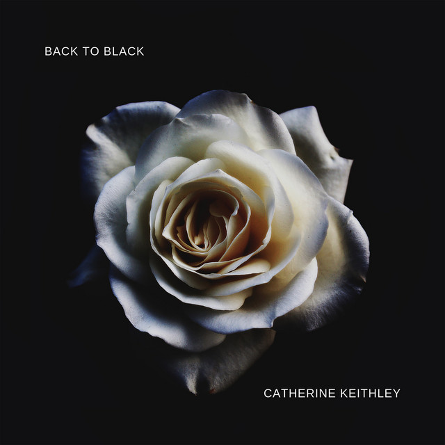

Random facts about these amazing music and there lyrics.
The beauty of "Santa Monica" by Bubble Tea and Cigarettes lies in its evocative lyrics, which capture the sense of longing, heartbreak, and resignation in a relationship. The song's melancholic tone and introspective lyrics convey the complexities of unrequited love and the pain of letting go, making it a poignant and emotionally resonant piece of music.
"505" by Arctic Monkeys is beautiful for its atmospheric and introspective lyrics, accompanied by haunting melodies, creating a sense of yearning and nostalgia that perfectly encapsulates the complexities of longing and desire in a relationship.
"Back to Black" by Amy Winehouse is beautiful for its raw and soulful expression of heartache and addiction, delivered through Winehouse's powerful and emotive vocals. The song's evocative lyrics and haunting melody capture the pain and turmoil of lost love, making it a timeless and emotionally resonant classic.
The beauty of Frank Sinatra's "If You Go Away" is encapsulated in its richly emotive lyrics and Sinatra's unparalleled vocal expression, which combine to evoke a profound sense of heartache and loss, making it a timeless exploration of the complexities of love and separation.